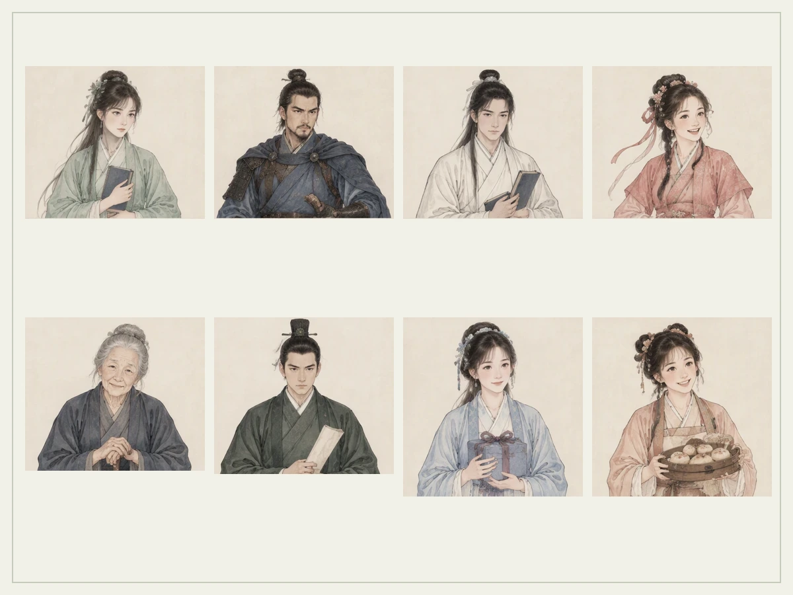
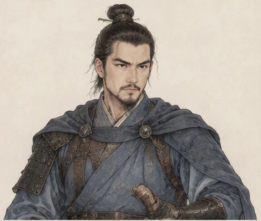
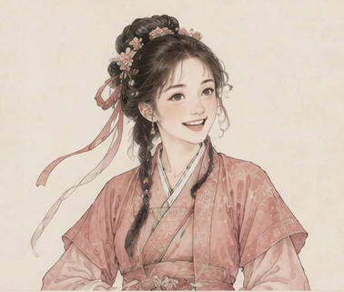
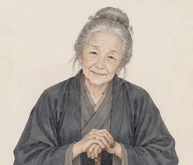

选择有代价
每个选项都能成立，也会放弃一些东西。没有道德标准答案。
人间日常 / 人物回声
不问你喜欢谁。从一张小院请柬、一封家书和几件庭中小事开始，看看你的处事倾向与谁相近。
16道行为题＋4道审美题。审美只改变海报配色，不决定角色。不采集照片、姓名、性别或联系方式。
大小写均可，空格与连字符会自动忽略。
测试码可重复使用，不是一次性兑换码。刷新页面需要重新输入。
少一点标签，多一点具体选择。二十四种人物回声 · 图片只展示气质，不决定你的结果



每个选项都能成立，也会放弃一些东西。没有道德标准答案。
把你的具体答案与角色的叙事观察对照，不只给一个名字。
不以外貌推断人格，不因匹配某角色就赋予你其经历或行为。
你的此次人物回声
此次最接近的角色倾向
娱乐性，非专业心理评估角色相似不代表相同经历、性别、道德或命运。01 / 答案与角色的交点
02 / 双极倾向，没有高低好坏
1–7为本题库内部的双极坐标，不是能力、健康或道德分数。标记显示角色参考值。
03 / 概念框架，而非诊断
借用自主与联结、情绪调节、风险权衡、认知灵活性等概念解释选择。这些情境题未经过心理测量学验证，不测大五人格，不识别依恋类型。
04 / 不是完全重合
三条观察来自公开节目梗概与人物资料，不是逐镜头心理编码。量化与解释为本项目人工建模；配角独立心理材料有限。
查看来源与限制娱乐性，非专业心理评估。此页面不是心理量表、诊断工具，也不应被用于招聘、婚恋筛选或评价他人。
每道行为题涉及3维，每个选项在对应维度给出1–7坐标。行为题逐维加权平均，4道压力题权重1.25，其余1；16题产生10维向量。4题审美独立投票，只决定配色，平票时采用最后一道相关审美选择。
角色按相同10维人工建模。距离采用逐维证据权重与相同维度权重的加权均方根；匹配指数＝100×(1－距离/6)。这只是规则内的相近程度，不是概率、准确率或统计置信度。前三名同时呈现，前两名距离差小于0.15时提示接近，此阈值也是设计规则。
同一维在不同情境的选择可以不同；分散度只说明情境差异，不据此判断不诚实或人格矛盾。人物证据权重为人工估计，不是实证信度。叙事功能、造型和角色阵营不进入用户心理评分。
不上传答案。浏览器本地仅保存版本号与选项进度；点击“清除本机记录”可删除。导出图片和报告由用户主动操作。部署平台仍可能产生基础访问日志。
非官方娱乐作品；无剧照和演员面容。原创视觉不替代影视IP、角色使用或商品销售授权，商业上线前应确认平台准入及权利边界。本版测试码仅在浏览器核对摘要，可被技术绕过、多人共享；不记录兑换次数，不支持一次性兑换，刷新需重输。无订单鉴权或付款接口，不是防转发付费系统。